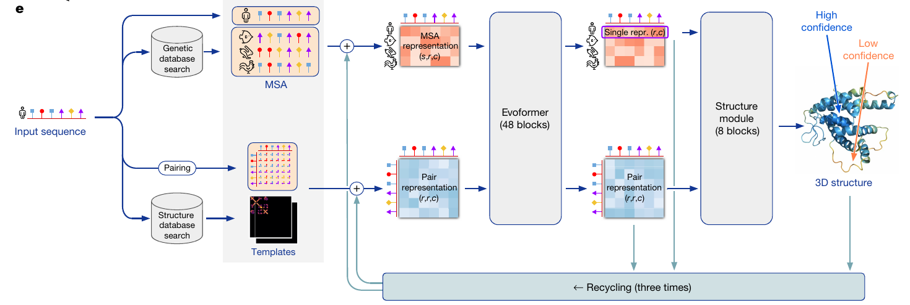
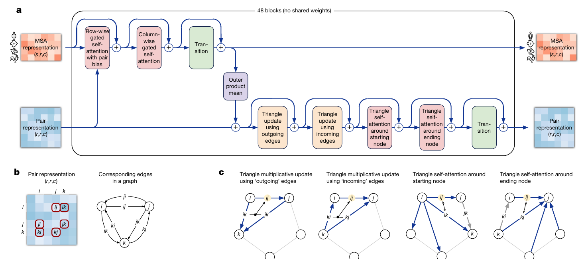
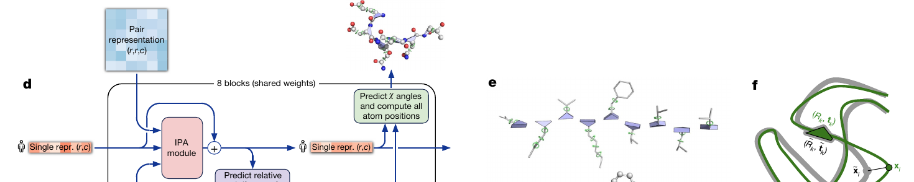
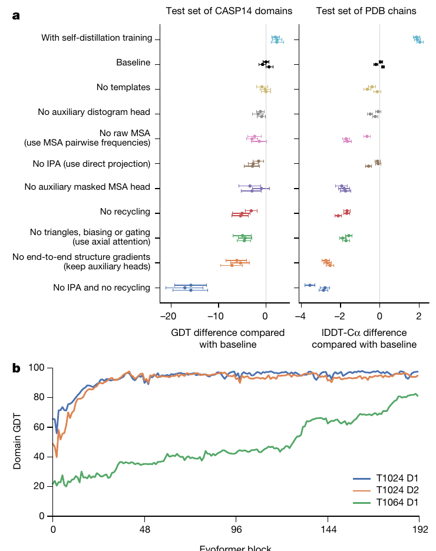
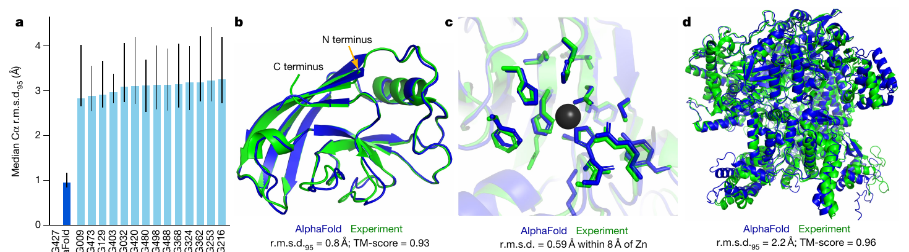
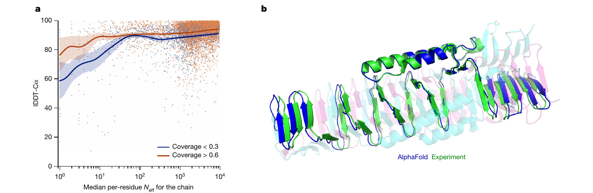

AlphaFold,
from zero.
How a neural network learned to read a protein’s amino-acid sequence and draw its 3-D shape with near-experimental accuracy — a 50-year-old problem. No background needed: we start from “what is a protein?” and end at every equation behind the paper.
How to read this book
Twenty-six short chapters, five parts, and about forty things you can poke.
This book assumes you know nothing about biology or machine learning. You will need only school arithmetic and a little geometry. Every new idea comes with a picture or a widget you can play with, and every equation is unpacked symbol by symbol.
Signposts
Plain-language pictures of what is going on. Read these even if you skip everything else.
The precise statement, with every symbol explained. Most of AlphaFold’s equations live in the paper’s Supplementary Information (“SI”), which gives 32 algorithms in pseudocode; we cite them as “SI Alg. n”.
Where this idea appears in the AlphaFold paper, with numbers taken directly from it. Tags like Paper Fig. 3 link to the paper.
Where the official implementation does it, with file names from deepmind/alphafold.
Widgets look like the box at the top of this page: a title with a ▶ mark, a one-line instruction, then controls. 3-D views can be rotated by dragging. Your progress (chapters you mark as read, light/dark choice) is remembered in your own browser only.
Many widgets use a toy protein that lives in your browser: a 50-residue bundle of three α-helices built from ideal geometry. Its “evolution” is a small statistical-physics model with a simplified four-letter chemistry (big hydrophobic, small, positive, negative), sampled by Monte Carlo so that residues touching in 3-D co-vary. The geometry, superposition, metrics (RMSD, GDT, lDDT, TM-score), frames and FAPE are computed exactly as defined. No widget runs the trained AlphaFold network — animations of the network’s behaviour are labelled as illustrations. Paper-scale numbers always come from the paper.
What is a protein?
A chain of small building blocks that folds itself into a machine.
Almost everything a living cell does is done by proteins. They digest food, copy DNA, carry oxygen in your blood, detect light in your eyes, and form the spikes viruses use to enter cells. The paper opens with exactly this: “Proteins are essential to life, and understanding their structure can facilitate a mechanistic understanding of their function” Paper abstract.
Chemically, a protein is a chain. Each link is one of 20 kinds of amino acid. Once linked into a chain, an amino acid is called a residue. All residues share the same backbone (a nitrogen N, a central carbon Cα — “C-alpha” — and a carbon C), and differ in their side chain, which sticks out from the Cα.
The list of residues, written one letter each, is the protein’s sequence (biologists call it the primary structure). The gene for the protein, written in DNA, encodes exactly this sequence. Sequencing DNA is now cheap and fast, so we know the sequences of billions of proteins.
A protein does not stay a floppy string. In water it folds into a specific 3-D shape — its structure — in which oily (hydrophobic) side chains huddle together inside and water-loving ones face outward. The shape decides the job: an enzyme’s pocket fits its target molecule; an antibody’s loops grip a virus. To understand or design a protein’s function, you want its structure.
The number of residues is written \(N_\text{res}\) in the paper. Typical proteins have a few hundred; the longest single chain the paper shows has 2,180 Paper Fig. 1d.
The protein folding problem
The sequence decides the shape. But how?
In the 1960s Christian Anfinsen showed that a protein, unfolded in the test tube, refolds into the same shape by itself: all the information needed is in its sequence (the paper’s ref. 9). This raised the protein folding problem. Its prediction part — “predicting the three-dimensional structure that a protein will adopt based solely on its amino acid sequence” — “has been an important open research problem for more than 50 years” Paper abstract.
Why not just try every shape?
So nature does not search blindly, and neither can a computer. The physics route simulates the forces between atoms and lets the protein fold in silico. It is “theoretically very appealing” but has “proved highly challenging for even moderate-sized proteins” because of the cost of simulation and the difficulty of writing down accurate enough physics Paper p. 583. Here is the flavour of the physics route at its very simplest:
Real proteins live in continuous 3-D space, have 20 residue types and complex forces — the number of shapes explodes far beyond anything enumerable. The second route, which AlphaFold follows, is the evolutionary route: learn the answer from the hundreds of thousands of structures already solved and from the evolutionary record written in sequence databases (Part III).
Why predict? The structure gap
We read sequences by the billion but solve structures by the handful.
Structures are determined experimentally, mainly by three techniques: X-ray crystallography (grow a crystal of the protein and shoot X-rays at it), cryo-electron microscopy (freeze it and image it with electrons) and NMR spectroscopy. Each solved structure is deposited in the Protein Data Bank (PDB). Each one is precious: the paper notes it can take “months to years of painstaking effort” per structure.
“Through an enormous experimental effort, the structures of around 100,000 unique proteins have been determined, but this represents a small fraction of the billions of known protein sequences.” Accurate computation is “needed to address this gap and to enable large-scale structural bioinformatics.” Paper abstract
There is a second reason prediction matters: the PDB is also the training data. AlphaFold learns from PDB structures released before 30 April 2018 Methods, then is tested on structures released later, which it has never seen.
Coordinates, distances and contact maps
A structure is just a list of 3-D points — and there are several ways to write it down.
A vector is an ordered list of numbers. A point in space is a vector of three numbers \(x = (x_1, x_2, x_3)\), measured in ångströms (Å; 1 Å = 10−10 m, roughly the size of an atom). A protein structure is the list of coordinates of all its atoms. For many purposes one point per residue is enough: the Cα atom. We write \(x_i \in \mathbb{R}^3\) for residue \(i\)’s Cα — “\(x_i\) is a list of 3 real numbers”.
The left one is the ordinary (Euclidean) distance. The right one, the dot product, is large when the vectors point the same way; it is the basic operation of attention (Chapter 7). Neighbouring Cα atoms along a chain are always about 3.8 Å apart.
Coordinates depend on where you put the origin and which way the axes point: rotate the whole molecule and every coordinate changes, though the protein has not. Distances do not have this problem. Collect all pairwise distances \(d_{ij} = \lVert x_i - x_j \rVert\) in a table and you get the distance matrix; mark the pairs closer than a threshold (8 Å is common) and you get the contact map.
(1) Coordinates — complete, but depend on an arbitrary frame of reference. (2) Distances — independent of rotation and translation, but (we will see) blind to mirror images. (3) Local frames and angles (next chapter and Chapter 17) — the language AlphaFold’s structure module speaks. A large part of AlphaFold’s design is about moving between these descriptions.
The backbone and its angles
Bond lengths are fixed; the freedom is in the twists.
Chemical bonds have nearly fixed lengths and angles. What varies are torsion (dihedral) angles — rotations about a bond. Along the backbone, each residue has two that matter: φ (phi, about the N–Cα bond) and ψ (psi, about the Cα–C bond). A third, ω (omega, about the peptide bond between residues), is almost always 180° because that bond is rigid and flat.
Two patterns dominate real proteins — the paper’s secondary structure:
- α-helix (φ ≈ −57°, ψ ≈ −47°): a right-handed spiral with 3.6 residues per turn, held by a hydrogen bond from each C=O to the N–H four residues later.
- β-strand (φ ≈ −120°, ψ ≈ +130°): an almost straight zig-zag; strands pair side by side into β-sheets.
Side chains have their own torsion angles, called χ (chi) angles: from zero (glycine, alanine) to four (lysine, arginine). AlphaFold predicts the backbone as a rigid frame per residue (Chapter 17), and then all of ω, φ, ψ and up to four χ angles to place every remaining atom (Chapter 19).
Natural amino acids are all “left-handed” (L) molecules, and α-helices in proteins are right-handed. The mirror image of a real protein is therefore not a valid protein, even though every distance in it is identical. Keep this in mind — it returns in Chapters 10 and 20.
How machines learn
Parameters, a loss, and many small steps downhill.
A neural network is a function with millions of adjustable numbers inside, called parameters or weights. Its basic building block is the linear layer: multiply a vector by a matrix of weights and add a bias, \(y = Wx + b\). Between linear layers sit simple non-linear functions (such as ReLU, \(\max(0, x)\)), which let stacked layers represent complex patterns. AlphaFold’s pseudocode is full of Linear(·) — every one is a learned matrix.
Training means finding parameter values that make a loss — a single number measuring how wrong the network is on known examples — as small as possible. The workhorse is gradient descent: compute the slope of the loss with respect to every parameter (the gradient) and step the other way.
Predicting probabilities: softmax
When the answer is one of several options, a network outputs one score (a logit) per option, and the softmax function turns scores \(\ell_1, \dots, \ell_n\) into probabilities:
\[ p_i = \frac{\exp(\ell_i / T)}{\sum_{j=1}^{n} \exp(\ell_j / T)} \]Every \(p_i\) is positive and they add to 1. The temperature \(T\) sharpens or flattens the distribution. AlphaFold uses this to predict, for every pair of residues, which distance bin they fall in — a distogram:
Scoring a probabilistic guess: cross-entropy
If the true answer is option \(y\) and the network gave it probability \(p_y\), the loss is \(-\log p_y\), averaged over examples: the cross-entropy. (Throughout, \(\log\) is the natural logarithm.)
A network is end-to-end when the loss is computed on the final answer and gradients flow back through every stage. Before AlphaFold 2, most structure predictors were pipelines: a network predicted distances, then a separate non-learned program built 3-D coordinates (Chapter 10). AlphaFold outputs coordinates directly and trains everything together; removing those end-to-end gradients costs about 6 GDT on CASP14 (Chapter 25).
Attention and transformers
Let every element decide which others to listen to.
The transformer (the paper’s ref. 52, the architecture behind modern language models) processes a set of elements — words, or residues — each represented by a vector. Its key operation is self-attention. Each element \(i\) computes a query \(q_i\); every element \(j\) a key \(k_j\) and a value \(v_j\), all by linear layers. Then:
- \(a_{ij}\): how much \(i\) attends to \(j\); softmax over \(j\) makes them sum to 1. \(c\) is the vector length; dividing by \(\sqrt{c}\) keeps the scores in a sensible range.
- \(b_{ij}\): an optional bias added straight into the scores. AlphaFold uses it to let one representation steer attention in another.
- \(g_i = \operatorname{sigmoid}(\operatorname{Linear}(\cdot))\): a gate of numbers between 0 and 1; \(\odot\) means element-wise multiplication. Gating lets the network softly switch an update off.
Attention usually runs as several heads in parallel, each with its own projections, whose outputs are concatenated. Two more ingredients appear in every AlphaFold block:
- Residual connections: each block adds its output to its input (\(x \leftarrow x + f(x)\)) rather than replacing it. The ⊕ circles in the paper’s Fig. 3a are these additions. Deep stacks (AlphaFold’s 48 Evoformer blocks) train well because of them.
- Layer normalisation: rescale each vector to mean 0 and variance 1 before using it, which keeps numbers well behaved.
- Transition: a small two-layer network applied to every position separately (the green boxes in Fig. 3a).
Multiple sequence alignments
Your protein has relatives in other species — line them up.
Proteins evolve. The same protein in a human, a fish and a bacterium has drifted to different sequences while keeping roughly the same shape and job. Searching huge databases for such homologues and lining them up position by position gives a multiple sequence alignment (MSA): a table with one row per sequence and one column per residue of the query.
Reading an MSA column by column already tells you a lot. A column that never changes is probably essential — often buried in the core or part of an active site. A column that tolerates many residues is probably on the surface. And — the subject of the next chapter — two columns that change together are probably touching.
The query sequence is searched against UniRef90 and MGnify with jackhmmer, and against BFD + Uniclust30 with HHBlits. BFD (Big Fantastic Database) was built for this work: 65,983,866 families covering 2,204,359,010 sequences, from UniProt plus metagenomic catalogues of soil and marine life, clustered with MMseqs2. Searches are “tuned for high recall; spurious matches will probably appear in the raw MSA but this matches the training condition of the network.” Methods, Inputs and data sources
The paper writes the number of sequences as \(N_\text{seq}\) and the number of residues as \(N_\text{res}\); in figures these are \(s\) and \(r\). AlphaFold’s main MSA representation uses a few hundred sequences (cluster centres of a larger alignment); a lighter “extra MSA” stack reads thousands more (SI 1.2.7).
Coevolution: reading contacts from sequences
If one partner changes, the other must follow.
Suppose residues 12 and 40 touch in the folded protein, and fit well because one is large and the other small. If a mutation makes 12 small, the protein may become loose — unless 40 later becomes large. Over millions of years, such compensating changes leave a statistical fingerprint: the two columns co-vary. This is coevolution (the paper’s refs. 20–24).
Let \(f_i(a)\) be the fraction of sequences with residue kind \(a\) in column \(i\), and \(f_{ij}(a,b)\) the fraction with \(a\) in column \(i\) and \(b\) in column \(j\). The mutual information
\[ \mathrm{MI}_{ij} = \sum_{a,b} f_{ij}(a,b)\, \log \frac{f_{ij}(a,b)}{f_i(a)\, f_j(b)} \]is zero if the columns are independent and positive otherwise. Columns that vary a lot get high MI with everything, so we subtract the average product correction \(\mathrm{APC}_{ij} = \overline{\mathrm{MI}}_{i\cdot}\,\overline{\mathrm{MI}}_{\cdot j} / \overline{\mathrm{MI}}\), where bars are averages over a row, a column, or everything.
If A touches B and B touches C, A and C can co-vary without touching. Pre-2018 methods (direct-coupling analysis, PSICOV) fitted global statistical models to remove such chains; later, deep networks learned to read contact maps from these statistics like reading an image. AlphaFold goes further: it reads the raw MSA and learns its own statistics. Replacing the raw MSA by pairwise frequencies costs it about 2 GDT on CASP14 (Chapter 25).
Before AlphaFold 2: from contacts to coordinates
Predict an “image” of distances, then fold a chain to match it.
The paper sums up the state of the art it replaced: recent methods treated “the problem of protein structure prediction as converting an ‘image’ of evolutionary couplings to an ‘image’ of the protein distance matrix and then integrating the distance predictions into a heuristic system that produces the final 3D coordinate prediction” Paper, Related work. DeepMind’s own CASP13 system (AlphaFold 1, ref. 10) was of this kind: a convolutional network predicted distograms, and gradient descent on a potential built from them produced coordinates. AlphaFold 2 is “a completely different model”.
You can run a miniature version of that older recipe here:
Run it a few times with different inputs and notice two weaknesses that AlphaFold 2 was designed around:
- Errors are frozen in. The coordinate builder cannot ask the network for a better guess; a wrong contact misleads it.
- Distances are blind to handedness. A structure and its mirror image have identical distance matrices, so the search lands on either one. Real pipelines needed extra torsion or orientation predictions to fix the chirality.
Templates
When a close homologue’s structure has already been solved, it can be used as a template: copy and adapt its coordinates (“homology modelling”, refs. 18–19). AlphaFold also searches PDB70 for templates and feeds them into its pair representation, but they are not essential: training without templates costs only a fraction of a GDT point on CASP14 (Fig. 4a).
CASP: a blind test
CASP (Critical Assessment of protein Structure Prediction) runs every two years. Organisers collect structures that have just been solved but not yet released; predictors receive only the sequences and submit models; assessors score them once the structures are public. It “has long served as the gold-standard assessment” Paper p. 584. AlphaFold entered CASP14 (May–July 2020) as team “AlphaFold2”.
Measuring accuracy: RMSD, GDT, lDDT, TM-score
How close is close? Four rulers, each with a purpose.
Comparing a model to the truth needs care: the two are in different coordinate frames. Global metrics first superpose them — find the rotation \(R\) and translation \(t\) minimising the summed squared distances.
RMSD after optimal superposition, over \(N\) Cα atoms:
\[ \mathrm{RMSD} = \min_{R,t} \sqrt{\tfrac{1}{N} \textstyle\sum_{i} \lVert R x_i + t - y_i \rVert^2 } \]r.m.s.d.95 (the paper’s headline CASP metric): repeat five times — superpose on the chosen atoms, then keep the 95% with the smallest error — and report the RMSD of the final 95%. This ignores a few residues distorted by crystal artefacts Methods, Metrics.
GDT (global distance test; CASP’s official domain score): the average, over cut-offs 1, 2, 4 and 8 Å, of the largest fraction of residues that can be superposed within that cut-off, ×100.
lDDT-Cα (local distance difference test): superposition-free. For every pair of residues closer than 15 Å in the truth, check whether the model preserves their distance within 0.5, 1, 2 and 4 Å; average the four fractions, ×100. Because it is local, it scores domains well even if they are packed wrongly.
TM-score (template modelling score): \(\displaystyle \mathrm{TM} = \max_{R,t} \frac{1}{L} \sum_{i} \frac{1}{1 + (d_i/d_0)^2}\), with \(d_0 = 1.24\,(L-15)^{1/3} - 1.8\) Å. Between 0 and 1, length-normalised, it rewards getting the overall fold right; above about 0.5 usually means the same fold.
This book computes all four in your browser (assets/js/protein.js), with a simplified superposition search for GDT and TM-score. The paper used TM-align for TM-scores and the official lDDT definition, which also scores all heavy atoms (“lDDT”) versus Cα only (“lDDT-Cα”).
The architecture at a glance
Two stages, two representations, one loop.
“The AlphaFold network directly predicts the 3D coordinates of all heavy atoms for a given protein using the primary amino acid sequence and aligned sequences of homologues as inputs” Paper p. 585. It has two main stages:
- The trunk: 48 Evoformer blocks process an \(N_\text{seq}\times N_\text{res}\) array (the processed MSA) and an \(N_\text{res}\times N_\text{res}\) array (residue pairs).
- The structure module: 8 blocks turn those into an explicit 3-D structure — a rotation and translation for every residue — and then all atom positions.

- a new architecture to jointly embed MSAs and pairwise features (the Evoformer);
- a new output representation and loss for accurate end-to-end structure prediction (frames and FAPE);
- a new equivariant attention architecture (invariant point attention);
- intermediate losses for iterative refinement, and recycling;
- a masked-MSA loss trained jointly with the structure;
- self-distillation on unlabelled sequences, and self-estimates of accuracy.
Two representations: the MSA and the pair
One table about sequences, one table about relationships.
A representation is a learned array of numbers that the network refines block after block. AlphaFold keeps two:
- The MSA representation \(m_{si} \in \mathbb{R}^{c_m}\), for every sequence \(s\) and residue \(i\): shape \((s, r, c)\) with \(c_m = 256\). “The columns of the MSA representation encode the individual residues of the input sequence while the rows represent the sequences in which those residues appear.” It starts from the raw MSA (one-hot residue types and deletion information).
- The pair representation \(z_{ij} \in \mathbb{R}^{c_z}\), for every ordered pair of residues: shape \((r, r, c)\) with \(c_z = 128\). It starts from the query sequence (an outer sum of embeddings of residues \(i\) and \(j\)), a relative position encoding (the offset \(j - i\), clipped to ±32, as a one-hot vector), and template features.
The paper’s key framing: “view the prediction of protein structures as a graph inference problem in 3D space in which the edges of the graph are defined by residues in proximity.” Each \(z_{ij}\) is the network’s current belief about the edge from residue \(i\) to residue \(j\) — how far apart, in which direction, whether they interact. Note \(z_{ij}\) and \(z_{ji}\) are separate directed edges. Paper p. 585, Fig. 3b
alphafold/model/config.py sets msa_channel: 256, pair_channel: 128, seq_channel: 384 (the single representation), 48 Evoformer blocks and 8 structure-module layers. The input embedding lives in alphafold/model/modules.py (EmbeddingsAndEvoformer).
Inside the Evoformer: attention along rows and columns
Nine operations, in a fixed order, repeated 48 times.

Each Evoformer block applies, in series, with a residual connection around each:
- MSA row-wise gated self-attention with pair bias — this chapter;
- MSA column-wise gated self-attention — this chapter;
- MSA transition;
- Outer product mean: MSA → pair (Chapter 15);
- Triangle multiplicative update using outgoing edges (Chapter 16);
- Triangle multiplicative update using incoming edges;
- Triangle self-attention around the starting node;
- Triangle self-attention around the ending node;
- Pair transition.
Axial attention on the MSA
Full attention over all \(s \cdot r\) cells of the MSA would cost \((s r)^2\) operations. Like vision models that attend along image rows and columns (“axial attention”, ref. 31), AlphaFold attends within one row or one column at a time.
Row attention mixes information along the protein within one sequence, biased by the pair representation. Column attention mixes information across species at one position. Both use 8 heads in the released configuration.
“We project additional logits from the pair stack to bias the MSA attention. This closes the loop by providing information flow from the pair representation back into the MSA representation” Paper p. 586. The outer product mean carries information the other way, MSA → pair, so every block fully mixes the two.
alphafold/model/modules.py: EvoformerIteration calls MSARowAttentionWithPairBias, MSAColumnAttention, Transition, OuterProductMean, TriangleMultiplication (×2), TriangleAttention (×2) and Transition, each wrapped in dropout and a residual add.
Outer product mean: the MSA talks to the pair
A learned, always-on version of coevolution statistics.
“The MSA representation updates the pair representation through an element-wise outer product that is summed over the MSA sequence dimension. In contrast to previous work, this operation is applied within every block rather than once in the network” Paper p. 585.
The outer product \(a \otimes b\) of two vectors is the table of all products \(a_p b_q\). Averaged over sequences, it becomes a table of co-occurrence statistics between columns \(i\) and \(j\).
With one-hot inputs the outer product mean is the pair-frequency table \(f_{ij}(a,b)\) at the heart of coevolution methods. With learned 32-dimensional vectors — which, after a few blocks, already carry context from attention — the network can extract whatever pair statistic helps, and update it 48 times as its picture of the structure improves.
Triangle updates: keeping distances consistent
Edges of a graph that must close into triangles.
A table of pairwise relationships is only meaningful if it can come from a real 3-D structure: “for a pairwise description of amino acids to be representable as a single 3D structure, many constraints must be satisfied including the triangle inequality on distances” Paper p. 586.
AlphaFold therefore updates each edge \(ij\) using the other two edges of every triangle \(ijk\). There are four variants, applied one after the other:
Multiplicative update, outgoing edges (incoming: swap to \(a_{ki}, b_{kj}\)):
\[ a_{ij}, b_{ij} = \operatorname{sigmoid}(\operatorname{Linear}(z_{ij})) \odot \operatorname{Linear}(z_{ij}), \qquad g_{ij} = \operatorname{sigmoid}(\operatorname{Linear}(z_{ij})) \] \[ \tilde z_{ij} = g_{ij} \odot \operatorname{Linear}\Big(\operatorname{LayerNorm}\Big(\textstyle\sum_k a_{ik} \odot b_{jk}\Big)\Big) \]Attention around the starting node (ending node: keys \(k_{kj}\), values \(v_{kj}\), bias \(b_{ki}\)):
\[ a_{ijk} = \operatorname{softmax}_k\Big(\tfrac{1}{\sqrt c}\, q_{ij}\cdot k_{ik} + b_{jk}\Big), \qquad \tilde z_{ij} = g_{ij} \odot \textstyle\sum_k a_{ijk}\, v_{ik} \]In the attention variants, the “missing edge” of the triangle (\(jk\) or \(ki\)) enters as a bias: “we add an extra logit bias to axial attention to include the ‘missing edge’ of the triangle”.
“The triangle multiplicative update was developed originally as a more symmetric and cheaper replacement for the attention, and networks that use only the attention or multiplicative update are both able to produce high-accuracy structures. However, the combination of the two updates is more accurate.” Removing triangles, biasing and gating together (plain axial attention instead) costs about 4–5 GDT on CASP14 Paper p. 586, Fig. 4a.
Frames: residues as rigid bodies
Every residue carries its own little coordinate system.
The structure module needs a concrete 3-D representation. AlphaFold’s choice: treat each residue’s backbone (N, Cα, C) as a rigid body and describe it by a frame \(T_i = (R_i, t_i)\) — a rotation matrix \(R_i\) (which way the residue faces) and a translation \(t_i\) (where its Cα is) “with respect to the global frame”.
A frame maps a point from the residue’s local coordinates to global coordinates, and back:
\[ T_i \circ x = R_i\, x + t_i, \qquad T_i^{-1} \circ x = R_i^{\mathsf T} (x - t_i) \]\(R_i\) is a rotation matrix: its columns are three perpendicular unit vectors, \(R^{\mathsf T}R = I\) and \(\det R = +1\) (a proper rotation, never a reflection). Frames compose: \((T_1 \circ T_2)\circ x = T_1 \circ (T_2 \circ x)\).
“These rotations and translations — representing the geometry of the N-Cα-C atoms — prioritize the orientation of the protein backbone so that the location of the side chain of each residue is highly constrained within that frame” Paper p. 586. A point described in a residue’s local frame moves rigidly with that residue — exactly the property that makes invariant point attention (next chapter) and FAPE (Chapter 20) work.
Frames are implemented in alphafold/model/r3.py (rigid transforms, rigids_from_3_points) and alphafold/model/quat_affine.py (the quaternion-based version used inside the structure module).
Invariant point attention
Attention that reasons in 3-D but does not care how the world is oriented.
A protein has no preferred orientation in space. A good structure network should give the same answer however the input structure is rotated or shifted — it should be invariant for internal quantities and equivariant for outputs (rotate the input, and the output rotates the same way).
Invariant point attention (IPA) “augments each of the usual attention queries, keys and values with 3D points that are produced in the local frame of each residue such that the final value is invariant to global rotations and translations” Paper p. 587.
- \(q_i^h \cdot k_j^h\): the usual scalar attention term on the single representation.
- \(b_{ij}^h\): a bias from the pair representation.
- \(\vec q_i^{\,hp}, \vec k_j^{\,hp}\): learned 3-D points (4 query points per head) produced by linear layers, expressed in each residue’s local frame. \(T_i\circ\) moves them into global space, where squared distances are measured. \(\gamma^h\) is a learned positive weight; \(w_C = \sqrt{2/(9 N_\text{query points})}\) and \(w_L = \sqrt{1/3}\) balance the three terms.
Outputs gather the pair representation \(\sum_j a_{ij}^h z_{ij}\), scalar values \(\sum_j a_{ij}^h v_j^h\), and value points brought back into \(i\)’s local frame: \(T_i^{-1}\circ \sum_j a_{ij}^h \big(T_j \circ \vec v_j^{\,hp}\big)\).
Apply a global transform \(T_\text{g}\) to the whole structure: every frame becomes \(T_\text{g}\circ T_i\). Then \(\lVert (T_\text{g}\circ T_i)\circ\vec q - (T_\text{g}\circ T_j)\circ\vec k\rVert = \lVert T_i\circ\vec q - T_j\circ\vec k\rVert\), because rigid motions preserve distances. And output points are expressed in \(T_i\)’s own frame, where \(T_\text{g}\) cancels. The SI gives the full proof (§1.8.2).
The 3-D terms “also impose a strong spatial/locality bias on the attention, which is well-suited to the iterative refinement of the protein structure.” Replacing IPA by a direct projection costs about 2 GDT on CASP14; removing both IPA and recycling costs about 16 Fig. 4a.
The structure module and the residue gas
Start everyone at the origin; let them all move at once.

The structure module reads the single representation (the first, query row of the MSA representation, projected to 384 numbers per residue) and the pair representation. The 3-D structure is a residue gas: \(N_\text{res}\) independent frames. “These representations are initialized in a trivial state with all rotations set to the identity and all positions set to the origin, but rapidly develop and refine a highly accurate protein structure with precise atomic details” Paper p. 585.
1. \(s_i \leftarrow s_i + \operatorname{IPA}(s, z, T)\), then a transition. 2. Predict an update from \(s_i\):
\[ (b_i, c_i, d_i, t_i) = \operatorname{Linear}(s_i), \qquad (a_i, b_i, c_i, d_i) \leftarrow \frac{(1, b_i, c_i, d_i)}{\sqrt{1 + b_i^2 + c_i^2 + d_i^2}} \]The normalised quaternion \((a, b, c, d)\) gives a rotation matrix \(R_i\) (fixing \(a = 1\) before normalising makes the update start close to “no rotation”). 3. Compose: \(T_i \leftarrow T_i \circ (R_i, t_i)\) — the update is applied in the residue’s own frame, which keeps the block equivariant. Eight such blocks share their weights.
Breaking the chain, on purpose
The frames are independent: nothing forces consecutive residues to stay bonded. This is deliberate: “the peptide bond geometry is completely unconstrained and the network is observed to frequently violate the chain constraint during the application of the structure module as breaking this constraint enables the local refinement of all parts of the chain without solving complex loop closure problems.” Bond geometry is encouraged by a violation loss during fine-tuning and enforced only at the very end by gradient-descent relaxation in the Amber force field — which “does not improve the accuracy … but does remove distracting stereochemical violations” Paper p. 586–587.
Side chains
“Predictions of side-chain χ angles as well as the final, per-residue accuracy of the structure (pLDDT) are computed with small per-residue networks on the final activations.” Each torsion angle is predicted as a 2-D vector (sine, cosine) and normalised; idealised rigid groups of atoms are then attached to the backbone frame by successive rotations, placing every heavy atom.
alphafold/model/folding.py: InvariantPointAttention, FoldIteration (one block) and StructureModule; alphafold/model/all_atom.py turns torsion angles into atom coordinates; alphafold/relax/ runs the Amber relaxation with OpenMM.
FAPE: the loss that knows left from right
Judge every atom from every residue’s point of view.
AlphaFold’s main loss is the frame aligned point error (FAPE). It “compares the predicted atom positions to the true positions under many different alignments. For each alignment, defined by aligning the predicted frame \((R_k, t_k)\) to the corresponding true frame, we compute the distance of all predicted atom positions \(x_i\) from the true atom positions. The resulting \(N_\text{frames} \times N_\text{atoms}\) distances are penalized with a clamped L1 loss” Paper p. 587.
- \(\vec x_{ij}\): atom \(j\) seen in frame \(i\)’s local coordinates, for prediction and truth.
- \(d_{ij}\): how far apart the two views are; \(\epsilon = 10^{-4}\) Ų keeps the square root smooth.
- \(d_\text{clamp} = 10\) Å caps each error, so one far-off atom cannot dominate; \(Z = 10\) Å makes the loss unitless.
FAPE is invariant to global rotations and translations (both views are local), like lDDT. But it is not invariant to reflections: in the mirror image, local frames remain right-handed, so the atoms come out on the wrong side. FAPE “creates a strong bias for atoms to be correct relative to the local frame of each residue and hence correct with respect to its side-chain interactions, as well as providing the main source of chirality for AlphaFold.” Paper p. 587
alphafold/model/all_atom.py: frame_aligned_point_error. It is used for the backbone after every structure-module block (the auxiliary loss) and for all atoms in all frames at the end.
Recycling and iterative refinement
Run the whole network again on its own answer.
AlphaFold reinforces “the notion of iterative refinement by repeatedly applying the final loss to outputs and then feeding the outputs recursively into the same modules” Paper p. 585. Two levels:
- Inside the structure module: the 8 shared-weight blocks each refine the frames, and FAPE (plus a torsion loss) is applied after every block — the auxiliary loss.
- Recycling the whole network: the final pair representation, the first row of the MSA representation and the predicted structure (as distances between predicted Cβ atoms) are embedded and added to the inputs of a fresh pass. At inference this is done three times (four passes). During training the number of recycling iterations is sampled at random and gradients flow only through the last one, so recycling “contributes markedly to accuracy with minor extra training time” (SI 1.8). Removing it costs about 4–5 GDT on CASP14 (Fig. 4a).

To see the network’s intermediate beliefs, the authors froze AlphaFold and trained a separate structure module for each of the 48 Evoformer blocks. “The resulting trajectories are surprisingly smooth after the first few blocks, showing that AlphaFold makes constant incremental improvements to the structure until it can no longer improve.” For hard targets such as SARS-CoV-2 ORF8 (T1064) “the network searches and rearranges secondary structure elements for many layers before settling on a good structure”; for LmrP (T1024) it “finds the final structure within the first few layers” Paper p. 587–588.
Training: losses, masking and self-distillation
One structure loss, several helpers, and a second round of learning from itself.
The loss
“The network is supervised by the FAPE loss and a number of auxiliary losses”: a distogram head (the pair representation projected to binned distances, cross-entropy), a BERT-like masked-MSA loss, a per-residue lDDT-Cα prediction head (for pLDDT), a side-chain loss, and, during fine-tuning, a structural-violation loss Methods, Training regimen.
Masked MSA prediction
“We randomly mask out or mutate individual residues within the MSA and have a Bidirectional Encoder Representations from Transformers (BERT)-style objective to predict the masked elements of the MSA sequences. This objective encourages the network to learn to interpret phylogenetic and covariation relationships without hardcoding a particular correlation statistic” Paper p. 587. It is trained jointly with the structure, not as a separate pre-training step.
Data, crops and compute
Training chains come from the PDB (release date up to 30 April 2018), sampled in inverse proportion to the size of their 40%-sequence-identity cluster so that over-studied families do not dominate. Each is randomly cropped to 256 residues; batches hold 128 examples, one per TPU v3 core. Training runs “until convergence (around 10 million samples)”, about one week, followed by about four days of fine-tuning with 384-residue crops, a larger MSA stack and a lower learning rate Methods.
Self-distillation
This “noisy student” procedure (ref. 35) turns unlabelled sequences into extra training data. Finally, five models are trained with different random seeds (some with templates, some without) for diversity; at prediction time all five are run and the one with the highest confidence is chosen.
Knowing what it doesn’t know: pLDDT, PAE and pTM
A prediction is only useful if you can tell when to trust it.
AlphaFold provides “precise, per-residue estimates of its reliability that should enable the confident use of these predictions” Paper p. 584. Three of them:
- pLDDT (predicted lDDT): for each residue, a small network on the final single representation predicts a distribution over 50 bins of lDDT-Cα; its expectation is the pLDDT, from 0 to 100.
- PAE (predicted aligned error): for each pair \((i, j)\), the expected error in residue \(j\)’s position when prediction and truth are aligned on residue \(i\)’s frame — predicted from the pair representation.
- pTM (predicted TM-score): computed from the PAE distribution; added after CASP14 by fine-tuning (SI 1.9.7).
On 10,795 recent PDB chains, “our confidence measure, the predicted local-distance difference test (pLDDT), reliably predicts the Cα local-distance difference test (lDDT-Cα) accuracy of the corresponding prediction”, and “the global superposition metric template modelling score (TM-score) can be accurately estimated” Paper Fig. 2c, d.
Results: CASP14 and the recent PDB
Accuracy competitive with experiment in a majority of cases.

- CASP14 backbone: median 0.96 Å r.m.s.d.95 (95% CI 0.85–1.16 Å) versus 2.8 Å (2.7–4.0 Å) for the next best method, over 87 domains and 146 entries.
- CASP14 all-atom: 1.5 Å (1.2–1.6 Å) versus 3.5 Å (3.1–4.2 Å).
- Side chains: highly accurate when the backbone is accurate (Fig. 2b) — even around a zinc ion the network never explicitly sees (Fig. 1c).
- Long proteins: correct domain packing for a 2,180-residue chain with no structural homologues (Fig. 1d).
- Recent PDB (3,144 chains without close templates): median full-chain Cα r.m.s.d.95 = 1.46 Å (1.40–1.56 Å) (Fig. 2a).
The recent-PDB evaluation matters as much as CASP: these are 10,795 uncurated chains released after the training cut-off, filtered for redundancy. It shows that CASP accuracy “transfers to an uncurated collection of recent PDB submissions”.
Speed
What matters: ablations and MSA depth
Take pieces away and see what breaks.
An ablation removes one component, retrains, and measures the damage. The paper’s Fig. 4a shows that “a variety of different mechanisms contribute to AlphaFold accuracy”:
- Biggest single losses: end-to-end structure gradients, recycling, and the triangle/biasing/gating machinery. Removing IPA and recycling together is far worse than either alone — they substitute for each other.
- Small effects: templates and the auxiliary distogram head.
- Gain: self-distillation adds accuracy on both test sets.
How deep must the MSA be?

“The accuracy decreases substantially when the median alignment depth is less than around 30 sequences … improvements in MSA depth over around 100 sequences lead to small gains.” The authors hypothesise that “the MSA information is needed to coarsely find the correct structure within the early stages of the network, but refinement of that prediction into a high-accuracy model does not depend crucially on the MSA information” Paper p. 588. Our toy coevolution in Chapter 9 shows the same kind of threshold.
Limits, relatives and legacy
What AlphaFold cannot do, and what it started.
Limits the paper reports
- Shallow MSAs. Proteins with few relatives (median depth below ~30) are predicted less accurately (Chapter 25).
- Proteins shaped by partners. AlphaFold “is much weaker for proteins that have few intra-chain or homotypic contacts compared to the number of heterotypic contacts” — for example bridging domains whose shape comes almost entirely from other chains in a complex. It is “often able to give high-accuracy predictions for homomers, even when the chains are substantially intertwined” (Fig. 5b).
- One structure per sequence. AlphaFold “is trained to produce the protein structure most likely to appear as part of a PDB structure.” It may implicitly respect a predictable ligand, ion or stoichiometry, but it outputs no ensemble of conformations, no ligands and no dynamics.
- Stereochemistry before relaxation. Raw outputs can contain small violations, removed by the Amber relaxation.
What the paper anticipated
“We expect that the ideas of AlphaFold are readily applicable to predicting full hetero-complexes in a future system.” And because predictions take GPU minutes to hours, they open “the exciting possibility of predicting structures at the proteome-scale and beyond” — demonstrated for the entire human proteome in the companion paper (Tunyasuvunakool et al. 2021, ref. 39). AlphaFold had already helped experimentalists with molecular replacement in crystallography and with interpreting cryo-EM maps.
Since then
The AlphaFold Protein Structure Database (with EMBL-EBI) grew to cover hundreds of millions of predicted structures; AlphaFold-Multimer extended the approach to complexes; AlphaFold 3 (2024) moved to a diffusion-based structure generator covering proteins, nucleic acids and small molecules. In 2024 Demis Hassabis and John Jumper shared the Nobel Prize in Chemistry (with David Baker, for protein design) for protein structure prediction. These developments are outside the paper; see the sources chapter.
Evolution writes structural constraints into sequence databases (coevolution). AlphaFold embeds an MSA and a pair representation and lets 48 Evoformer blocks pass information between them — attention along rows and columns, the outer product mean, and triangle updates that keep pairwise beliefs geometrically consistent. A structure module then treats each residue as a rigid frame, starting at the origin, and moves all of them together with invariant point attention, breaking the chain if it helps. The whole network is trained end to end with FAPE, a loss that measures errors from every residue’s point of view and therefore knows left from right, plus helper losses, recycling and self-distillation. It also predicts its own accuracy (pLDDT, PAE, pTM). The result: median backbone accuracy under 1 Å on CASP14.
Cheat sheet: every equation
| What | Equation | Chapter |
|---|---|---|
| Softmax | \(p_i = e^{\ell_i/T} / \sum_j e^{\ell_j/T}\) | 6 |
| Cross-entropy | \(-\log p_y\) | 6 |
| Gated attention with bias | \(a_{ij} = \operatorname{softmax}_j(q_i\cdot k_j/\sqrt c + b_{ij}),\; o_i = g_i \odot \sum_j a_{ij} v_j\) | 7 |
| Mutual information | \(\mathrm{MI}_{ij} = \sum_{ab} f_{ij}(a,b)\log\frac{f_{ij}(a,b)}{f_i(a)f_j(b)}\) | 9 |
| RMSD | \(\min_{R,t}\sqrt{\frac1N\sum_i\lVert Rx_i+t-y_i\rVert^2}\) | 11 |
| TM-score | \(\max_{R,t}\frac1L\sum_i \frac{1}{1+(d_i/d_0)^2},\; d_0 = 1.24(L-15)^{1/3}-1.8\) | 11 |
| MSA row attention | \(a_{sij} = \operatorname{softmax}_j(q_{si}\cdot k_{sj}/\sqrt c + b_{ij})\) | 14 |
| MSA column attention | \(a_{sti} = \operatorname{softmax}_t(q_{si}\cdot k_{ti}/\sqrt c)\) | 14 |
| Outer product mean | \(z_{ij} \mathrel{+}= \operatorname{Linear}(\operatorname{flatten}(\operatorname{mean}_s a_{si}\otimes b_{sj}))\) | 15 |
| Triangle update (outgoing) | \(\tilde z_{ij} = g_{ij}\odot\operatorname{Linear}(\operatorname{LN}(\sum_k a_{ik}\odot b_{jk}))\) | 16 |
| Triangle attention (start) | \(a_{ijk} = \operatorname{softmax}_k(q_{ij}\cdot k_{ik}/\sqrt c + b_{jk})\) | 16 |
| Rigid transform | \(T\circ x = Rx + t,\; T^{-1}\circ x = R^{\mathsf T}(x-t)\) | 17 |
| Frame from N, Cα, C | \(e_1 = \widehat{C-C_\alpha},\; e_2 = \widehat{v_2 - (e_1\cdot v_2)e_1},\; e_3 = e_1\times e_2\) | 17 |
| IPA logits | \(w_L\big(q_i\cdot k_j/\sqrt c + b_{ij} - \frac{\gamma w_C}{2}\sum_p\lVert T_i\circ\vec q_i^{\,p} - T_j\circ\vec k_j^{\,p}\rVert^2\big)\) | 18 |
| Backbone update | \((a,b,c,d) = (1,b,c,d)/\sqrt{1+b^2+c^2+d^2},\; T_i \leftarrow T_i\circ(R_i,t_i)\) | 19 |
| FAPE | \(\frac1Z\operatorname{mean}_{ij}\min(d_\text{clamp}, \lVert T_i^{-1}\circ x_j - T_i^{\text{true}-1}\circ x_j^\text{true}\rVert)\) | 20 |
| Calibration fits | \(\text{lDDT-C}\alpha = 0.997\,\text{pLDDT} - 1.17;\; \text{TM} = 0.98\,\text{pTM} + 0.07\) | 23 |
Glossary
- Ablation
- Removing one component of a model and retraining to measure its contribution.
- Amino acid, residue
- The 20 building blocks of proteins; a residue is one amino acid within a chain.
- APC
- Average product correction: removes background from mutual-information scores.
- Backbone, side chain
- The repeating N–Cα–C chain shared by all residues; the variable group attached to each Cα.
- CASP
- Critical Assessment of protein Structure Prediction: a biennial blind test.
- Coevolution
- Correlated changes in two MSA columns, often because the residues touch.
- Contact map, distance matrix
- Tables of which residue pairs are close / how far apart all pairs are.
- Distogram
- A predicted probability distribution over distance bins for each residue pair.
- Evoformer
- AlphaFold’s trunk block that jointly updates MSA and pair representations (48 blocks).
- FAPE
- Frame aligned point error: AlphaFold’s main structural loss.
- Frame (rigid transform)
- A rotation and translation \((R, t)\) placing a residue in space.
- GDT
- Global distance test: average fraction of residues within 1, 2, 4 and 8 Å after superposition.
- IPA
- Invariant point attention: attention using 3-D points in residue frames; invariant to global motion.
- lDDT, lDDT-Cα
- Local distance difference test: superposition-free, fraction of local distances preserved.
- MSA
- Multiple sequence alignment of a protein with its evolutionary relatives.
- Neff
- Effective number of sequences in an MSA, down-weighting near-duplicates.
- Outer product mean
- The Evoformer operation that writes MSA statistics into the pair representation.
- PAE, pTM
- Predicted aligned error between residue pairs; predicted TM-score derived from it.
- PDB
- Protein Data Bank: the archive of experimentally determined structures.
- pLDDT
- Predicted lDDT-Cα per residue: AlphaFold’s confidence score (0–100).
- Recycling
- Feeding the network’s outputs back as inputs for further passes (three extra at inference).
- Relaxation
- Final energy minimisation in the Amber force field to remove stereochemical violations.
- Residue gas
- The structure module’s representation: independent, free-floating residue frames.
- RMSD, r.m.s.d.95
- Root-mean-square deviation after superposition; the 95%-coverage variant used in the paper.
- Self-distillation
- Retraining on a mix of real data and the model’s own confident predictions.
- Single representation
- Per-residue vectors (the query row of the MSA representation) used by the structure module.
- Template
- A solved structure of a related protein used as an extra input.
- TM-score
- Length-normalised global similarity score between 0 and 1.
- Torsion angles φ, ψ, ω, χ
- Rotations about backbone and side-chain bonds that determine shape.
- Triangle update / triangle attention
- Pair-representation operations that update edge ij from edges ik, jk (or ki, kj).
Sources and further reading
- The paper: J. Jumper, R. Evans, A. Pritzel, T. Green, M. Figurnov, O. Ronneberger, K. Tunyasuvunakool, R. Bates, A. Žídek, A. Potapenko, et al. Highly accurate protein structure prediction with AlphaFold. Nature 596, 583–589 (2021). Open access, CC BY 4.0. Its Supplementary Information contains the full pseudocode (Algorithms 1–32) referred to as “SI” in this book.
- The code and weights: github.com/deepmind/alphafold. Files referenced:
alphafold/model/modules.py,folding.py,all_atom.py,r3.py,quat_affine.py,config.py,alphafold/common/confidence.py,alphafold/relax/. - Companion paper: K. Tunyasuvunakool et al. Highly accurate protein structure prediction for the human proteome. Nature (2021).
- Background cited by the paper: Anfinsen (1973) on folding; Marks et al. (2011) and Weigt et al. (2009) on coevolution; Senior et al. (2020), AlphaFold 1; Vaswani et al. (2017), transformers; Zhang & Skolnick (2004), TM-score; Mariani et al. (2013), lDDT; Xie et al. (2020), noisy-student self-training; Devlin et al. (2019), BERT.
Figures marked “Jumper et al. (2021)” are cropped from the paper and reused under its Creative Commons Attribution 4.0 licence. All other diagrams and widgets were made for this book. Quoted numbers come from the main paper; values labelled as read off a figure are approximate. The toy protein and its evolution are original constructions, not data from the paper.